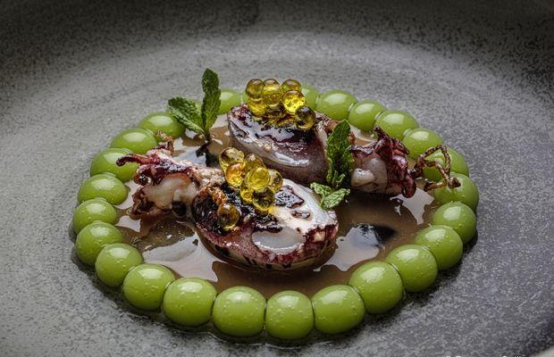
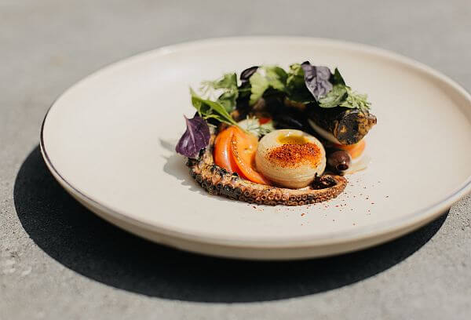
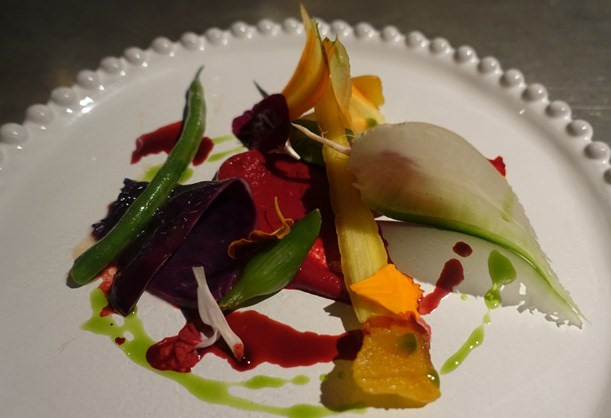
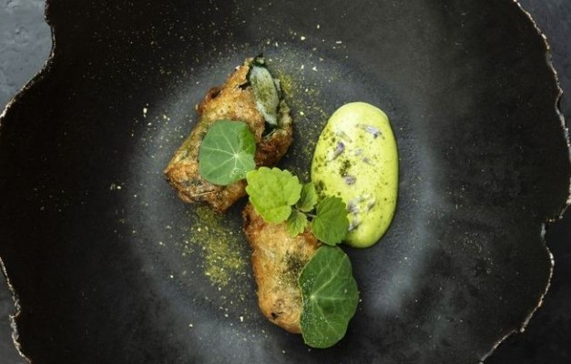
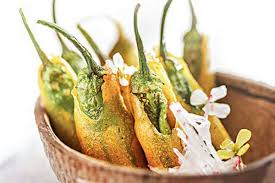

Carrer de Villarroel, 163, 08036 Barcelona, Spain
Disfrutar is a world-renowned Michelin-starred restaurant located in the heart of Barcelona. Known for its avant-garde culinary creations and exceptional dining experience, Disfrutar offers a fusion of innovative techniques and Mediterranean flavors. Each dish is a unique masterpiece, making it a must-visit destination for food enthusiasts worldwide. The chefs at Disfrutar craft each meal with passion and precision, delivering a sensory experience that transcends the traditional boundaries of dining. With a commitment to creativity and excellence, Disfrutar continues to evolve and captivate its guests with bold flavors and stunning presentations, making it one of the top culinary destinations in Europe.
Location:
Calle de Tennyson 133, Polanco, 11550 Ciudad de México, Mexico
Pujol, led by Chef Enrique Olvera, is a fine-dining experience that blends traditional Mexican ingredients with modern culinary techniques. With an ever-evolving menu, Pujol offers a sophisticated take on Mexican flavors, and it is recognized as one of the best restaurants in Latin America. The restaurant prides itself on its innovative approach to Mexican cuisine, incorporating elements of molecular gastronomy and local produce to create dishes that are both surprising and memorable. Pujol's tasting menu is a journey through Mexico's diverse culinary landscape, showcasing the rich cultural heritage and the bold flavors that make Mexican food unique. Whether it's the famous mole or the perfectly cooked seafood, Pujol offers a one-of-a-kind dining experience that continues to push the boundaries of Mexican gastronomy.
Location:
8 Rue de la Tour d'Auvergne, 75009 Paris, France
Table by Bruno Verjus is an intimate dining experience in Paris, offering a menu that is based on seasonal and local ingredients. The restaurant is celebrated for its open kitchen concept and unique take on French cuisine, making it a favorite for food lovers seeking a personalized experience. Chef Bruno Verjus’s philosophy revolves around transparency and a deep respect for the ingredients, allowing them to shine through in every dish. The atmosphere is relaxed yet refined, with an emphasis on hospitality and making guests feel at home. Each course is thoughtfully crafted with an attention to detail, from the perfectly balanced appetizers to the beautifully presented main dishes and desserts. It’s a celebration of both simplicity and sophistication, providing a memorable culinary journey that captures the essence of French dining.
Location:
104 E 30th St, New York, NY 10016, USA
Atomix is a modern Korean restaurant in New York, offering an immersive dining experience with an innovative approach to traditional Korean cuisine. With a focus on bold flavors and artistic presentations, Atomix has earned high praise from critics and patrons alike. The restaurant offers a multi-course tasting menu that explores the depths of Korean culinary traditions, from its fermented staples to the diverse regional flavors. Chef and owner, Junghyun Park, combines traditional techniques with contemporary elements to craft dishes that are both visually stunning and packed with layers of flavor. Atomix has garnered attention for its dedication to delivering a unique and elevated dining experience that celebrates the complexity of Korean food. Every meal is a journey through the rich culinary history of Korea, paired with an immersive atmosphere that enhances the overall experience.
Location:
68/1 Soi Langsuan, Ploenchit Road, Lumpini, Pathumwan, Bangkok 10330, Thailand
Gaggan is a progressive Indian restaurant located in Bangkok, renowned for its creative and innovative approach to Indian cuisine. The restaurant combines traditional flavors with contemporary techniques, offering a unique tasting menu that delights food enthusiasts from around the world. Chef Gaggan Anand has revolutionized Indian cuisine by pushing the boundaries of what Indian food can be, incorporating global influences while staying true to his roots. Each dish at Gaggan is designed to challenge your expectations and evoke a range of emotions, from playful presentations to intense flavors that captivate the senses. The restaurant's cutting-edge techniques, including molecular gastronomy, make Gaggan a one-of-a-kind dining destination that offers an unforgettable culinary adventure. With an emphasis on storytelling through food, Gaggan offers a truly unique experience that leaves guests with lasting memories.
Location: